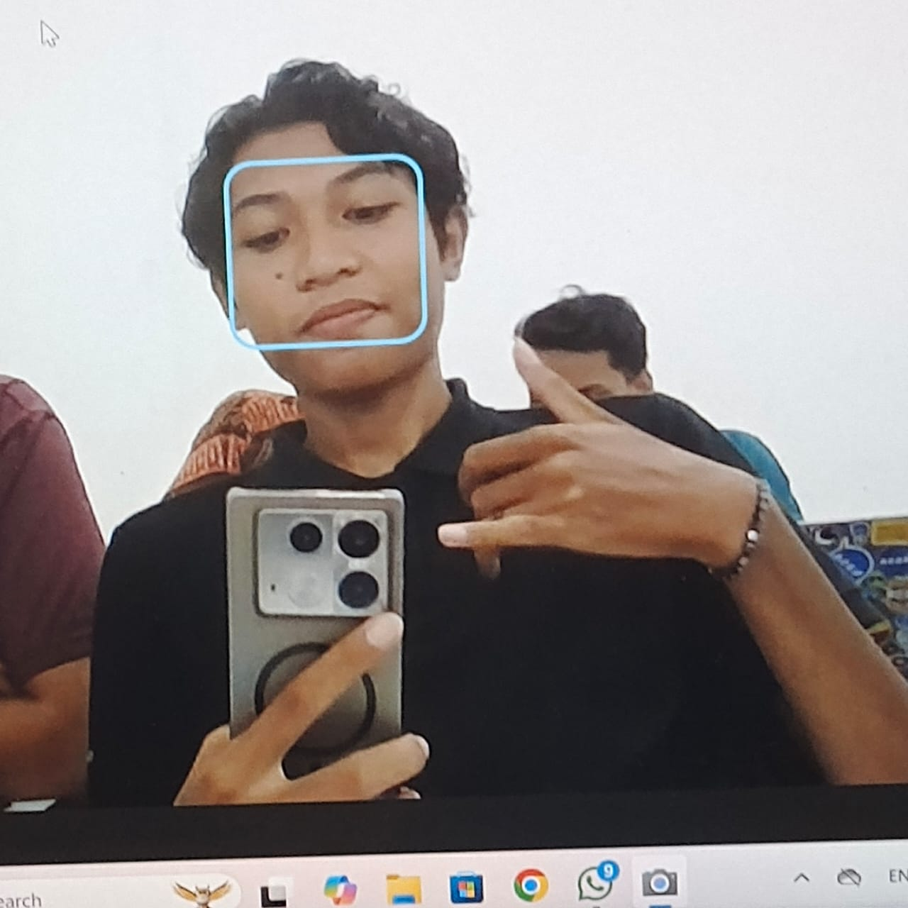

Julian's Academy adalah Platform yang dapat membantumu mencari bahan ajar, dan alat-alat yang membantu untuk masalah perkuliahan terutama untuk prodi pendidikan matematika

Albert Einstein
Isaac Newton

Nikola Tesla
Muhamad Juliana

Farid Arrahman
Semester yang masih mudah banget tapi jangan sampai main-main di semester ini, jangan lupa cari teman yang banyak.
Semester dimana kalian lebih sibuk ngerjain laprak dari pada fokus belajar matkul prodi sendiri.
Semesternya lebih mudah dari semester 3 sebenarnya tapi tugasnya makin banyak dan ingat jangan pindah prodi ya.

Teknologi Pembelajaran Metematika
Berisi bahan ajar dan hal-hal membantu lainnya dari mata kuliah ini.
Select
Strategi Pembelajaran Metematika
Berisi bahan ajar dan hal-hal membantu lainnya dari mata kuliah ini.
SelectSemester dimana udah mulai kerasa nih capeknya, tapi apapun yang terjadi tetap semangat dan jangan pindah prodi wkwk.

Geometri Analitik Bidang
Berisi bahan ajar dan hal-hal membantu lainnya dari mata kuliah ini.
SelectSemester dimana jam tidur udah mulai menipis tapi masih amanlah ya kuncinya jangan lupa healing aja sama teman.
Semster dimana apa-apa nanggung udah capek banget tapi mau pindah prodi dikit lagi lulus, oh ya jangan lupa siapin judul skripsi.
Berisi soal-soal Quiz, UTS, UAS dan lainnya yang bisa membantumu mendapatkan nilai bagus kek JULIAN wkwkw.
Email: muhamadjuliana22@gmail.com
Program Studi Pendidikan Matematika FKIP,
Universitas Mataram
Alamat : Jl. Majapahit No. 62 Kota Mataram
© Julian Academy | Semua Hak Dilindungi
Penggunaan situs ini tunduk pada syarat dan ketentuan.